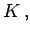

Inhalt Index DeskTop Bronstein

 Algebra und Diskrete Mathematik Klassische algebraische Strukturen Operationen
Algebra und Diskrete Mathematik Klassische algebraische Strukturen Operationen


Manchmal werden auch äußere Operationen betrachtet. Das sind Abbildungen von K x A in  wobei K eine ,,äußere``, meist auch selbst strukturierte Menge ist.